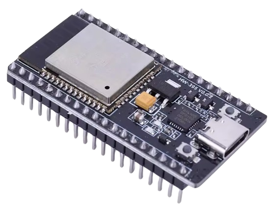
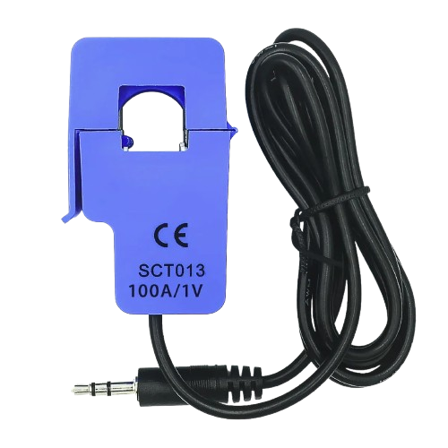
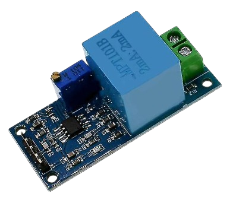
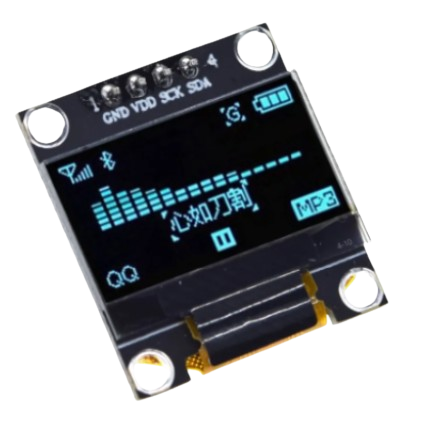
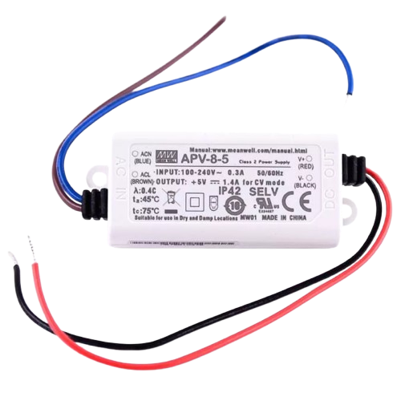
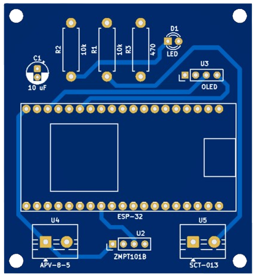
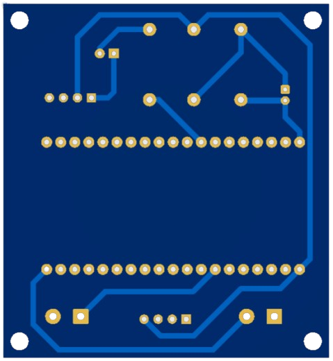
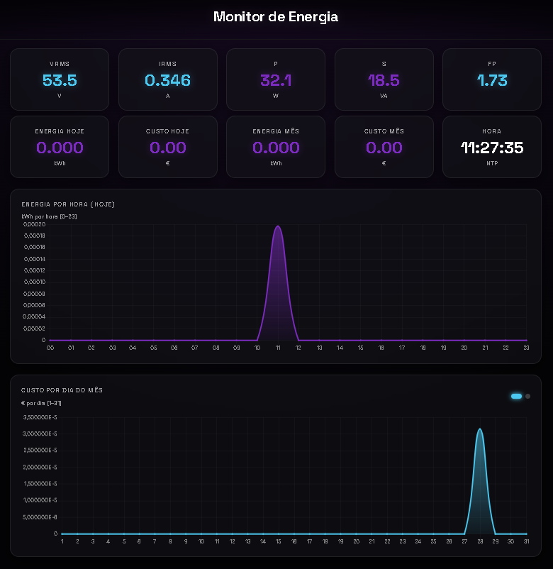

Overview
The Energy Monitor is a sophisticated, real-time IoT device built to provide profound insights into a building's electrical footprint. By continuously sampling voltage and current at the mains, it calculates exact active power, reactive power, and power factor. These metrics are processed and streamed to live dashboard graphics, empowering users to track daily habits, isolate energy hogs, and ultimately reduce their environmental impact and electricity costs through data-driven decisions.
Goals
Components Used

ESP32 Microcontroller
The brain of the project. It reads sensor data and acts as an asynchronous web server to host the dashboard.

SCT-013 Sensor
Non-invasive current sensor that clamps around the live wire in the main electrical panel.

ZMPT101B Transformer
Active AC voltage transformer module used to safely and precisely sample the mains voltage waveform.

SSD1306 OLED Display
A crisp 0.96-inch I2C display that provides real-time local readouts of voltage, current, and active power.

APV-8-5 Power Supply
A reliable isolated AC-DC switching power supply providing a stable 5V output to safely power the circuitry.
Custom PCB Design


To ensure robust long-term operation within the main electrical panel, a bespoke two-layer Printed Circuit Board (PCB) was engineered. This clean, compact design seamlessly integrates the ESP32 microcontroller, the analog signal conditioning circuits for the SCT-013 and ZMPT101B sensors, and an isolated AC-DC power module. By eliminating messy point-to-point wiring, the custom board significantly reduces electrical noise and enhances the safety and reliability of the high-voltage system.
Dashboard & Data Visualization

To make the data actionable, the project includes a bespoke web dashboard designed to run 24/7 on a dedicated display. Served entirely from the ESP32's internal flash memory, the interface features live digital gauges for instant readouts and dynamic charts to plot consumption trends. The dark modern aesthetic ensures it blends seamlessly into a high-tech smart home environment.
System Demonstration
Watch this brief explanatory video to see the Energy Monitor in action. It covers the real-time responsiveness of the dashboard, historical data tracking, and provides a closer look at the physical installation inside the electrical panel.